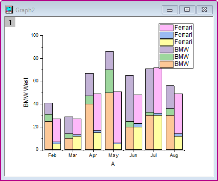

グループ化積み上げ棒グラフ
GroupedStackedColumn
概要
Originでは、複数データセットを積み上げ棒グラフとして作図可能です。通常、データセットはデフォルトでグループ化されます。さらに、サブグループ化により、以下に示すような2つのサブグループを持つ積み上げ棒グラフの作成が可能になりました。

必要なOriginのバージョン: 2021 SR0以降
学習する項目
このチュートリアルでは、以下の項目について解説します。
- オンラインテンプレートを使用してグループ化積み上げ棒グラフを作図する
- 一般的な積み上げ棒グラフをサブグループ化して、グループ化積み上げ棒にする
- 縦棒にラベルを追加する
- グラフのX軸表を表示し作成・編集する
グループ化積み上げ棒グラフを作成する
このチュートリアルは、<Origin EXE Folder>\Samples\Tutorial Data.opjというプロジェクトのGrouped
Stacked Columnフォルダを使います。
Note: ラーニングセンターダイアログのグラフサンプルにあるColumn and Barのサムネイルをダブルクリックしてサンプルグラフを開くことができます。
(メニューからヘルプ:ラーニングセンターを開くか、F11を押すと開きます。）
グループ化積み上げ棒グラフを作成するには、次の2つの方法があります。
- Origin 2021以降、Originは多数のオンラインテンプレートを提供しています。テンプレートセンターからテンプレート「並列積み上げ縦棒グラフ」をダウンロードして、グループ化積み上げ棒グラフを直接プロットするために使用できます。
- もちろん、一般的な積み上げ縦棒グラフからグループ化積み上げ棒グラフを作成することもできます。
方法1：オンラインテンプレートを使用する
- 列B～Gを選択した状態で、メニューから作図：ユーザテンプレートに作図を選択してテンプレートライブラリを開きます。右上のテンプレートセンターを開くボタンをクリックします。

- テンプレートセンターが開きます。オンラインテンプレートの「並列積み上げ縦棒グラフ」を探してダウンロードします。
- テンプレートのダウンロード後、テンプレートセンターを閉じます。このテンプレートは、テンプレートライブラリの一覧に表示されます。そのテンプレートを選択して作図ボタンをクリックすると、グラフが作成されます。
- 最終的に、次のグラフのようになります。

方法2：積み上げ棒グラフをサブグループ化する
- ワークシートSheet1をアクティブにし、B列からG列までを選択して、 作図>棒、円、面積: 積み上げ縦棒を選択してグラフを作図します。
- 縦棒グラフをダブルクリックして、作図の詳細（プロット属性）ダイアログを開きます。グループタブで、サブグループをサイズによるに設定し、サブグループのサイズを3にします。
- 作図の詳細ダイアログの左パネルで、Layer1を選択し、積み上げ形式タブを開きます。累積/推移のサブグループ内のオフセット（「グループ」タブ内）のチェックを付けます。適用ボタンをクリックします。
- OKをクリックして、ダイアログを閉じます。メニューからグラフ操作：再スケールして全てを表示を選択して再スケールします。最終的に、次のグラフのようになります。
- 
棒グラフにラベルを追加する
- 縦棒をクリックして表示されるミニツールバーで、グループタブの「データラベルを表示」ボタンを選択して縦棒のラベルを表示します。
- ラベルをクリックして表示されるミニツールバーで、ラベルソースボタンをクリックし、ドロップダウンリストからパーセントを選択します。
- ミニツールバーを使用してすべての列のラベルを変更するには、現在のレイヤグループの最初のプロットを選択する必要があることに注意してください。積み上げ棒グラフでは、最初のサブグループ内の一番下のものを最初のプロットにする必要があります。
- グラフレイヤをダブルクリックして、作図の詳細ダイアログを開きます。作図の詳細ダイアログの左パネルで、Layer1を選択し、積み上げ形式タブを開きます。積み上げ棒グラフで合計ラベルを表示にチェックを入れます。
- 最終的に、次のようなグラフとラベルになります。

X軸の目盛ラベル表を作成する
- X 軸の目盛ラベルの行を2行にするには、X 軸の目盛ラベル上でダブルクリックして、軸ダイアログを開きます。
- 目盛ラベルタブを選択してから下軸アイコンを選択します。
- その中のフォーマットタブでフォントサイズを16に設定します。
- 表タブに移動し、一番上にある有効にするチェックをつけてから行数を2に変更します。
すると、左パネルの下アイコンが下1に変わり、下2が追加されます。
- 表のレイアウトは以下のように設定します。
- 下2アイコンを選択し、表示タブのデータセット名を[Book4]Sheet1!H
に設定し、フォーマットタブでフォントサイズを12にします。これにより、ワークシートのLabel(Y)列を参照した自動車の名称が目盛ラベル行に表示されます。
- 表のレイアウトは下図のダイアログのように設定します。
- OKボタンをクリックしてダイアログを閉じます。凡例をレイヤ内に移動します。凡例をクリックしてミニツールバーを開き、データプロット凡例変換モードボタンをクリックしてドロップダウンからロングネームを選びます。
- 最終的に、次のグラフのようになります。
色をカスタマイズする
- 縦棒グラフをダブルクリックして、作図の詳細（プロット属性）ダイアログを開きます。グループ タブを開き、塗り色の詳細の中にある ボタンをクリックします。色の作成ダイアログが開きます。
- 1つめの色を選択し、赤,緑,青 の値を 165,196,0に設定し、置換ボタンをクリックしてこの色をカラーリストに追加します。
- RGBの値で、5つのカスタムカラーを追加してみます。: (243, 62, 12), (243, 200,
30), (0, 64, 127) (119, 0, 31), (124, 191, 243).
- 6つめより下の色をすべて選択し、キーボードの Delete キーを押すと、選択されていた色が削除され、作成した6つの色のみが残ります。OK
をクリックして、色の作成を閉じます。
- グラフウィンドウの灰色の背景の部分で右クリックし、開いたメニューから、 レイヤタイトルを追加/変更 を選択します。レイヤタイトルとして、Salesと入力します。
- サイズの変更が必要な場合は、緑色のレイヤ操作ハンドルを使って変更します。最終的に、サマリーにあるようなグラフになります。